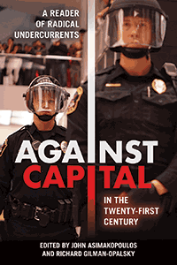

<HTML><head><script> (function(i,s,o,g,r,a,m){i['GoogleAnalyticsObject']=r;i[r]=i[r]||function(){  (i[r].q=i[r].q||[]).push(arguments)},i[r].l=1*new Date();a=s.createElement(o),  m=s.getElementsByTagName(o)[0];a.async=1;a.src=g;m.parentNode.insertBefore(a,m)   })(window,document,'script','//www.google-analytics.com/analytics.js','ga');   ga('create', 'UA-43183130-1', 'temple.edu');   ga('send', 'pageview'); </script><title>Edited by John Asimakopoulos and Richard Gilman-Opalsky: Against Capital in the Twenty-First Century - Print</TITLE><link rel="stylesheet" href="../general.css" type="text/css"><SCRIPT LANGUAGE = JAVASCRIPT></SCRIPT></HEAD><BODY LINK="#3152A5" VLINK="#3152A5" ALINK=Gray BGCOLOR=White><CENTER><P CLASS=intro><br>A broad, nonsectarian collection of anti-capitalist thinking, featuring landmark contributions both classic and contemporary<br><br></P></CENTER><br>&nbsp;<!--none//--><Table width="100%" border=0 cellspacing=5><tr><td width="175" align="center"></td><td><h1 class = "booktitle">Against Capital in the Twenty-First Century</h1> <h1 class = "subtitle">A Reader of Radical Undercurrents</h1><h3 class="author">Edited by John Asimakopoulos and Richard Gilman-Opalsky </h3><p class="info">paper EAN: 978-1-4399-1358-1 (ISBN:1-4399-1358-7)</br>$34.95, Feb 18, <font color=#990033>Available</font><br><p class="info">cloth EAN:  978-1-4399-1357-4 (ISBN:1-4399-1357-9)</br>$104.50, <font color=#990033>Available</font><br><p class="info">Electronic Book EAN: 978-1-4399-1359-8 (ISBN:1-4399-1359-5)</br>$34.95, <font color=#990033>Available</font><br><p class="info">358 pp, 6 x 9 </p></td></tr></table></P></td></tr></table><BR>
	
	

<BLOCKQUOTE><p>"Against Capital in the Twenty-First Century <i>makes a formidable-and highly original-contribution to the literature. The central themes and arguments advanced in the volume, which are always stimulating and provocative, enjoy a direct relevance for many central and increasingly urgent interdisciplinary debates across the social sciences. Empowering and liberating in equal measure, a particular strength is the richness, nuance, and impressive depth of insight and analysis, driven by an uncompromised intent to move society beyond the entrenched and intersectional crises faced at this time. Finally, the choice of intellectuals, all recognized as leading scholars in their own fields-both past and present-with which</i><b><i> </i></b><i>to capture and animate the book's content, serves to further strengthen its excellent quality and relevance. In short, I hope that it will be read widely, and repeatedly.</i>"
<br>&#8212;<b>Richard J. White</b>, Reader in Human Geography, Sheffield Hallam University<br></BLOCKQUOTE>
	
<P><p>The problems of capitalism have been studied from Karl Marx to Thomas Piketty. The latter has recently confirmed that the system of capital is deeply bound up in ever-growing inequality without challenging the continuance of that system. <i>Against Capital in the Twenty-First Century</i> presents a diversity of analyses and visions opposed to the idea that capital should have yet another century to govern human and non-human resources in the interest of profit and accumulation. The editors and contributors to this timely volume present alternatives to the whole liberal litany of administered economies, tax policy recommendations, and half-measures. They undermine and reject the logic of capital, and the foregone conclusion that the twenty-first century should be given over to capital just as the previous two centuries were.Providing a deep critique of capitalism, based on assessment from a wide range of cultural, social, political, and ecological thinking, <i>Against Capital in the Twenty-First Century</i> insists that transformative, revolutionary, and abolitionist responses to capital are even more necessary in the twenty-first century than they ever were. 
	
<p><i>Contributors include: Franco "Bifo" Berardi, Hakim Bey, Murray Bookchin, Henry Charles Bukowski, Cornelius Castoriadis, Ralf Dahrendorf, Guy Debord, Raya Dunayevskaya, Mart&#237;n Espada, Frantz Fanon, Silvia Federici, Alicia Garza, Henry Giroux, David Graeber, Robert Greenwald, F&#233;lix Guattari, David Stanley Hill, John Holloway, C.L.R. James, Selma James, KRS-One (Lawrence Parker), Staughton Craig Lynd, Peter McLaren, Angela Mitropoulos, James O'Connor, Fredy Perlman, Penelope Rosemont, Sayres Rudy, Stevphen Shukaitis, Marina Sitrin, Constantine D. Skordoulis, Isabelle Stengers, Raoul Vaneigem, John Zerzan</i><br>
	
<P CLASS="top"><A HREF="#top">BACK TO TOP</A></P></p><P></P>
	
	
<P><h2  class="inpageheading"><A NAME="excerpt"></a>Excerpt</h2><p>
	<A HREF="http://www.temple.edu/tempress/chapters_2400/2405_ch1.pdf">
		Read an excerpt of the Introduction (pdf).</A><br>
	
	
<P CLASS="top"><A HREF="#top">BACK TO TOP</A></P></P>
	
	
<P><h2  class="inpageheading"><A NAME="reviews"></a>Reviews</h2>
	
<p><i>"This is a fantastic collection, likely to be adopted in final-year undergraduate and postgraduate courses in radical politics, sociology, and cultural studies courses, of which there are an increasing number in Europe, the UK, and the U.S. As the editors note, readers will inevitably exclude important authors, but the list here is interesting, broad, and, as they also rightly point out, un-sectarian. There is no equivalent text that I can think of which brings together such a rich collection of primary writings and which will help readers make sense of the interests and concerns of contemporary radical activism</i>."<br>&#8212;<b>Ruth Kinna</b>, Department of Politics, History, and International Relations, Loughborough University, and author of <i>Kropotkin: Reviewing the Classical Anarchist Tradition</i><br>
	
<p><i>"In</i> Against Capital in the Twenty-First Century, <i>Asimakopoulos and Gilman-Opalsky have assembled a collection of texts that traverses the borders of Marxism, feminist radicalisms, anarchism, and the interstices existing between them. This will be the leading collection for contemporary students of radical thought and practitioners of freedom for decades to come."</i><br>&#8212;<b>Deric Shannon</b>, editor of <i>The End of the World as We Know It? Crisis, Resistance, and the Age of Austerity</i> and co-author of <i>Political Sociology: Oppression, Resistance, and the State</i><br>
	
<p>"Against Capital in the Twenty-First Century <i>is more than just a reader. Drawing upon a vast body of theoretical, scholarly, and political literature, ranging from the theoretical ideas of Cornelius Castoriadis to the transformative analysis of Staughton Lynd, this book generates stunning insights into the continuity and transformation of radical thought. It deserves the widest possible readership."</i><br>&#8212;<b>Andrej Gruba&#269;i&#263;,</b> Professor and Chair of the Department of Anthropology and Social Change at the California Institute of Integral Studies<br>
	
<p><i>"In this extremely timely volume, Asimakopoulos and Gilman-Opalsky do an excellent job of weaving together the loose and disparate ends of transformative theory into a unified, mutually-reinforcing whole. </i>Against Capital in the Twenty-First Century <i>is essential reading for anyone seeking to understand the theoretical and practical trajectory of radical thought in today's world."</i><br>&#8212;<b>Nathan J. Jun</b>, Associate Professor of Philosophy, Midwestern State University<br>
	
	
<P CLASS="top"><A HREF="#top">BACK TO TOP</A></P></b></p>
	
<p><h2 class="inpageheading"><A NAME="contents"></a>Contents</h2>
<P><span style="font-family: 'Verdana';font-size: 13px;color: #353535;" >
	Acknowledgments<br/><br/>
	Introduction: Against Capital in the Twenty-First Century &bull; Richard Gilman-Opalsky and John Asimakopoulos<br/><br/></span>
	<span style="font-family: 'Verdana';font-size: 13px;color: #353535;font-weight: bold;" >1 | Theory/Praxis</span>
	<span style="font-family: 'Verdana';font-size: 13px;color: #353535;" ><br/>1.1. Think Hope, Think Crisis &bull; John Holloway<br/>1.2. The New Spaces of Freedom &bull; F&eacute;lix Guattari<br/>1.3. The Theory of State-Capitalism: The Soviet Union as Capitalist Society &bull; Raya Dunayevskaya<br/>1.4. Death, Freedom, and the Disintegration of Communism &bull; Raya Dunayevskaya<br/>1.5. Revolution and Counterrevolution in Hungary &bull; Raya Dunayevskaya<br/>1.6. Dialectics: The Algebra of Revolution &bull; Raya Dunayevskaya<br/><br/></span>
	<span style="font-family: 'Verdana';font-size: 13px;color: #353535;font-weight: bold;" >2 | Ideology</span>
	<span style="font-family: 'Verdana';font-size: 13px;color: #353535;" ><br/>2.1. Socialism or Barbarism &bull; Cornelius Castoriadis<br/>2.2. Ideology Materialized &bull; Guy Debord<br/>2.3. American &quot;Common Sense&quot; &bull; Fredy Perlman<br/>2.4. Radical Learning through Neoliberal Crisis &bull; Sayres Rudy<br/><br/></span><span style="font-family: 'Verdana';font-size: 13px;color: #353535;font-weight: bold;" >3 | Class Composition and Hierarchy</span><span style="font-family: 'Verdana';font-size: 13px;color: #353535;" ><br/>3.1. Karl Marx's Model of the Class Society &bull; Ralf Dahrendorf<br/>3.2. Sex, Race, and Class &bull; Selma James<br/>3.3. Wageless of the World &bull; Selma James<br/>3.4. Hierarchy of Wages and Incomes &bull; Cornelius Castoriadis<br/>3.5. A Brief Rant against Work: With Particular Attention to the Relation of Work to White Supremacy, Sexism, and Miserabilism &bull; Penelope Rosemont<br/><br/></span><span style="font-family: 'Verdana';font-size: 13px;color: #353535;font-weight: bold;" >4 | Racialization and Feminist Critique</span><span style="font-family: 'Verdana';font-size: 13px;color: #353535;" ><br/>4.1. The Lived Experience of the Black Man &bull; Frantz Fanon<br/>4.2. The Negro's Fight: Negroes, We Can Depend Only on Ourselves! &bull; C.L.R. James<br/>4.3. Harlem Negroes Protest Jim Crow Discrimination &bull; C.L.R. James<br/>4.4. Feminism and the Politics of the Common in an Era of Primitive Accumulation &bull; Silvia Federici<br/>4.5. #BlackLivesMatter &bull; Alicia Garza<br/><br/></span><span style="font-family: 'Verdana';font-size: 13px;color: #353535;font-weight: bold;" >5 | Critical Pedagogy</span><span style="font-family: 'Verdana';font-size: 13px;color: #353535;" ><br/>5.1. Beyond Dystopian Visions in the Age of Neoliberal Violence &bull; Henry A. Giroux<br/>5.2. Chapman Democracy Activist Offers a Radical Critique of Capitalism: Interview with Peter McLaren &bull; Jonathan Winslow<br/>5.3. Neoliberal Globalization and Resistance in Education: The Challenge of Revolutionary Critical Pedagogy &bull; Constantine Skordoulis<br/>5.4. Transformative Education, Critical Education, Marxist Education: Possibilities and Alternatives to the Restructuring of Education in Global Neoliberal Times &bull; Dave Hill<br/><br/></span><span style="font-family: 'Verdana';font-size: 13px;color: #353535;font-weight: bold;" >6 | Capitalist Culture and Cultural Production</span><span style="font-family: 'Verdana';font-size: 13px;color: #353535;" ><br/>6.1. The Revolution of Everyday Life &bull; Raoul Vaneigem<br/>6.2. Info-labor/Precarization &bull; Franco &quot;Bifo&quot; Berardi<br/>6.3. Imaginal Machines &bull; Stevphen Shukaitis<br/><br/></span><span style="font-family: 'Verdana';font-size: 13px;color: #353535;font-weight: bold;" >7 | Language, Literature, and Art</span><span style="font-family: 'Verdana';font-size: 13px;color: #353535;" ><br/>7.1. How We Could Have Lived or Died This Way &bull; Mart&iacute;n Espada<br/>7.2. My Name Is Espada &bull; Mart&iacute;n Espada<br/>7.3. Vivas to Those Who Have Failed: The Paterson Silk Strike, 1913 &bull; Mart&iacute;n Espada<br/>7.4. Factotum &bull; Charles Bukowski<br/>7.5. Interview with Robert Greenwald &bull; John Asimakopoulos<br/>7.6. Sound of da Police &bull; KRS-One<br/><br/></span><span style="font-family: 'Verdana';font-size: 13px;color: #353535;font-weight: bold;" >8 | Ecology</span><span style="font-family: 'Verdana';font-size: 13px;color: #353535;" ><br/>8.1. What Is Social Ecology? &bull; Murray Bookchin<br/>8.2. Socialism and Ecology &bull; James O'Connor<br/>8.3. Why Primitivism? &bull; John Zerzan<br/>8.4. In Catastrophic Times: Resisting the Coming Barbarism &bull; Isabelle Stengers<br/><br/></span><span style="font-family: 'Verdana';font-size: 13px;color: #353535;font-weight: bold;" >9 | Historical Transformations</span><span style="font-family: 'Verdana';font-size: 13px;color: #353535;" ><br/>9.1. Conflict Groups, Group Conflicts, and Social Change &bull; Ralf Dahrendorf<br/>9.2. Debt: The First 5,000 Years &bull; David Graeber<br/>9.3. When the Future Began &bull; Franco &quot;Bifo&quot; Berardi<br/>9.4. Post-Fordist, American Fascism &bull; Angela Mitropoulos<br/><br/></span><span style="font-family: 'Verdana';font-size: 13px;color: #353535;font-weight: bold;" >10 | New Modalities of Collective Action</span><span style="font-family: 'Verdana';font-size: 13px;color: #353535;" ><br/>10.1. From Globalization to Resistance &bull; Staughton Lynd<br/>10.2. Platform for a Provisional Opposition &bull; Guy Debord<br/>10.3. The Temporary Autonomous Zone &bull; Hakim Bey<br/>10.4. The Conscience of a Hacker &bull; The Mentor<br/>10.5. Horizontalism and Territory: From Argentina and Occupy to Nuit Debout and Beyond &bull; Marina Sitrin<br/><br/>Contributors<br/>Index</span></P>
	
	<P CLASS="top"><A HREF="#top">BACK TO TOP</A></P></p>

<P><H2  class="inpageheading"><A NAME="author bio"></a>About the Author(s)</H2><p><b>John Asimakopoulos</b> is Full Professor of Sociology at the City University of New York. He is the author of <i>Social Structures of Direct Democracy: On the Political Economy of Equality, </i>and the co-author of <i>The Accumulation of Freedom: Writing on Anarchist Economics</i>, and <i>Revolt!: The Next Great Transformation of Kleptocracy Capitalism to Libertarian Socialism through Counter Ideology, Societal Education, & Direct Action.</i><br>
	<p><b>Richard Gilman-Opalsky</b> is Associate Professor of Political Philosophy in the Department of Political Science at the University of Illinois, Springfield. He is author of <i>Unbounded Publics: Transgressive Public Spheres, Zapatismo, and Political Theory;</i> <i>Spectacular Capitalism: Guy Debord and the Practice of Radical Philosophy</i>; <i>Precarious Communism: Manifest Mutations, Manifesto Detourned</i>; and <i>Specters of Revolt: On the Intellect of Insurrection and Philosophy from Below.</i><br>
		
<P CLASS="top"><A HREF="#top">BACK TO TOP</A></P></P></P>
<P><h2 class="inpageheading"><a name="subjects"></a>Subject Categories</h2> 
	<p><a href="http://www.temple.edu/tempress/sociology.html" target="_top">Sociology</a> 
		<br><a href="http://www.temple.edu/tempress/social.html" target="_top">Community Organizing and Social Movements</a> 
		<br><a href="http://www.temple.edu/tempress/philosophy.html" target="_top">Philosophy and Ethics</a> 
		<br><a href="http://www.temple.edu/tempress/labor.html" target="_top">Labor Studies and Work</a> 
		<br><a href="" target="_top"></a> </p></P><P></P>

<P CLASS="top"><A HREF="#top">BACK TO TOP</A></P></td><td width=2%>&nbsp;</td><td width=5>&nbsp;</td></tr></table><BR><font face="Arial" size="1"><a href="copyright.html" OnMouseOver="window.status='Web Copyright Policy';return true;" OnMouseOut="window.status=''" TITLE="Web Copyright Policy">&copy;</a> 2018 <a href="http://www.temple.edu" target="new" OnMouseOver="window.status='Link to Temple University home page';return true;" OnMouseOut="window.status=''" TITLE="Link to Temple University home page">Temple University</a>. All Rights Reserved. This page: http://www.temple.edu/tempress/titles/2405_reg.html</font></BODY></HTML>                
                   
